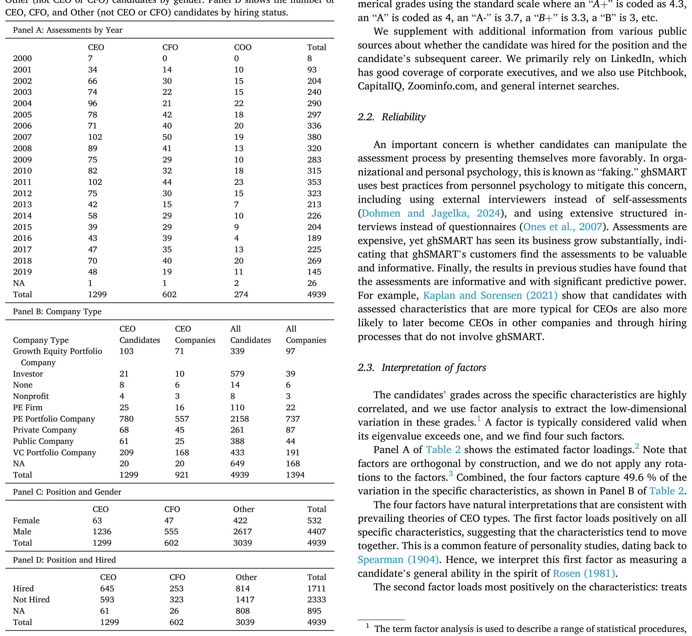
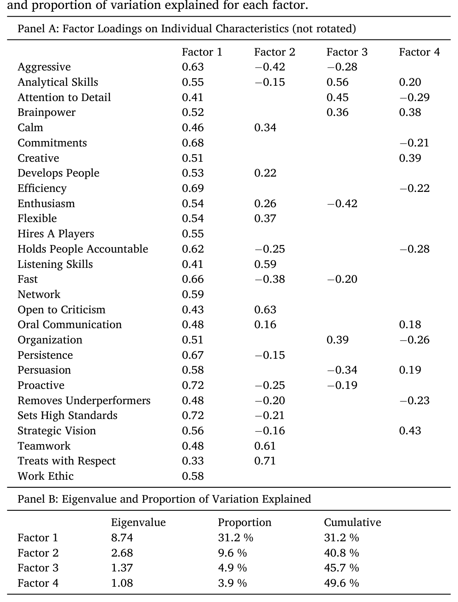
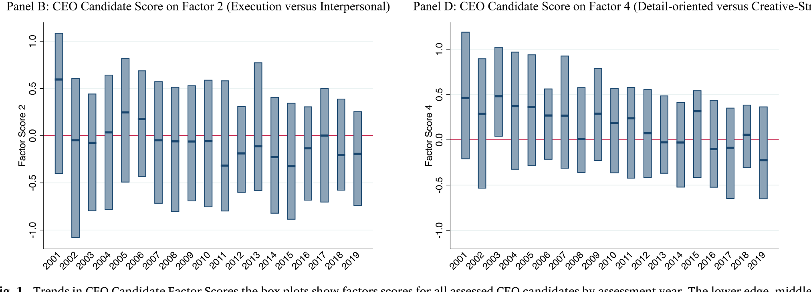
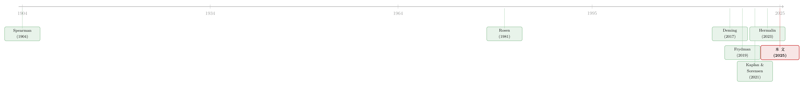

CEO 真的变「软」了吗？——四千多份高管测评里的一个反转
本文读的是 Decressin, Kaplan & Sorensen (2025, Journal of Financial Economics)：作者用 ghSMART 在 2000–2019 年间对 4939 名高管候选人做的逐人测评，发现近二十年来 CEO 候选人不是变得更「软」、更善于人际，而是恰恰相反——综合能力在下降，更偏执行、更冷静理性、更注重细节，人际与魅力则在变弱。换句话说，舆论和一部分学者口中「CEO 越来越需要软技能」的故事，在候选人的供给侧里找不到证据。
1 一个流行的说法，和一个不太合群的发现
先讲一个你大概也听过的说法。
这些年，无论是商业媒体还是一部分学术研究，都在反复强调一件事：今天的 CEO 和高管，应该更注重软技能（soft skills）和人际能力。理由也很顺：Deming (2017) 论证，整个美国经济对社交技能（social skills）的需求在上升，因为越来越多的工作变成团队生产、需要工人之间「交易任务」；Fuller et al. (2021) 去翻了大量高管招聘的职位描述，发现公司对 CEO 的社交技能——激励、说服、倾听、共情——的明文要求确实在增加。听起来，一个更温暖、更会带人的 CEO 时代正在到来。
但也有人不买账。Pfeffer (2015, 2022) 就一直唱反调：他认为成功的领导者从来都是那一套——「搭建自己的权力基础、拥抱模糊、不去讨好所有人、掌握影响他人的科学」——本质上什么都没变。
那么，到底变了没有？
这正是本文要回答的问题。而它给出的答案，恰好站在了流行说法的反面。
这里有一个供给与需求的微妙区分，是读懂全文的钥匙。Fuller et al. (2021) 量的是公司「想要什么样的 CEO」——这是需求侧（招聘广告里的措辞）。而本文量的是「实际被考察、被评估的 CEO 候选人长什么样」——这是供给侧（候选人池子的真实画像）。两边趋势相反，逻辑上完全可以并存：需求在喊「要软技能」，但供给端冒出来的人反而越来越「硬」。
2 数据：把人「打分」这件事
要谈 CEO 的性格变了没有，第一步得能量性格。本文最特别的地方，就在于它拿到了一份别人很难拿到的数据。
数据来自 ghSMART——一家专门为公司做高管测评的咨询公司，客户多是私募股权（private equity, PE）基金在尽职调查（due diligence）时、或上市公司董事会在搜寻 CEO 时下的单。它的做法不是让候选人填问卷自评（那样容易「装」，心理学里叫 faking），而是由外部访谈者做一场冗长的结构化面试（structured interview），追问候选人在职业生涯各个具体情境里的真实行为，最后写成一份详尽报告，并就大约 30 项具体特质从 D 到 A+ 打分。作者再把这些字母分换算成数字（A+ = 4.3，A = 4，A- = 3.7，B+ = 3.3，B = 3，以此类推）。
样本规模是这篇论文相对前作最大的底气：4939 名候选人，分布在 1394 家公司，覆盖 2000–2019 整整二十年。这比 Kaplan and Sorensen (2021) 用的约 2600 份测评几乎翻了一倍，也正因为多了这十几年的纵深，才第一次能认真谈「趋势」。其中最常见的职位是 CEO（1299 人），其次是 CFO（602）、VP（463）和 COO（274）。一半以上的 CEO 候选人，是被 PE 在投资前的尽调中考察的。

Table 1: internal description of the specific characteristics and their
有几个细节值得留意。一是女性极少：全样本里超过 10% 是女性，但 CEO 候选人里女性不到 5%（1299 人里只有 63 位）。作为参照，He and Whited (2023) 报告 S&P 500 公司里有 6.6% 的女性 CEO。二是录用率：被评估的 CEO 候选人里大约一半最终被聘用（645 人被聘，593 人没被聘）——这给后文「被聘 vs. 没被聘」的对比留了空间。三是 ghSMART 只评估、不推荐人选，对某人是否被录用没有利益关系，这让分数少了一层操纵动机。
3 把三十种特质，压成四个维度
接着，一个自然的问题是：三十项特质，逐项去看趋势既零碎又容易互相矛盾，怎么办？
作者的办法是因子分析（factor analysis）。直觉很简单：这三十项打分彼此高度相关——一个在「主动性」上拿高分的人，往往在「设定高标准」上也拿高分。因子分析就是去找出藏在这些相关背后、维数更低的几条「主轴」。技术上，每一项特质的得分都被写成若干潜在因子的线性组合：
$$ g_{ij} = \sum_{k=1}^{4} \lambda_{jk}\, F_{ik} + u_{ij} $$
这里 \(g_{ij}\) 是候选人 \(i\) 在特质 \(j\) 上的分数，\(F_{ik}\) 是候选人 \(i\) 在第 \(k\) 个潜在因子上的因子得分（factor score），\(\lambda_{jk}\) 是特质 \(j\) 在因子 \(k\) 上的载荷（loading），\(u_{ij}\) 是特质特有的残差。作者用 Stata 的 factor 命令、极大似然法估了 4 个因子，且不做任何旋转（rotation）；抽样适足性的 KMO 指标高达 0.93，说明数据非常适合做因子分析。
那为什么恰好是「四个」？因子分析里一个常见判据是：保留特征值（eigenvalue）大于 1 的因子，而这里正好有四个。更妙的是，这四个因子和 Kaplan and Sorensen (2021) 在更小样本里找到的四个因子几乎一模一样，合计解释了 49.6% 的特质变异——也就是说，半数左右的高管性格差异，可以被这四条轴概括。

Table 2: and brainpower while loading most negatively on attention to detail
那么这四个因子分别是什么？这是全文的概念骨架，值得逐个说清（括号里是该因子解释的变异比例）：
-
因子一：综合能力（general ability，
31.2%）。 它在所有特质上都载正——主动性、设定高标准（载荷均为0.72）、效率（0.69）、坚持（0.67）……一个在某项上强的人往往各项都强。这其实是心理学里很老的发现，可一直追溯到 Spearman (1904) 的「一般智力」，在经济学里则对应 Rosen (1981)「超级明星」框架里的通用才能。 -
因子二：执行 vs. 人际（execution vs. interpersonal，
9.6%）。 正向最强的是「尊重他人」（0.71）、「乐于接受批评」（0.63）、「团队合作」（0.61）、「倾听」（0.59）；负向最强的是「进取/咄咄逼人」（-0.42）、「行动快」（-0.38）、「主动」、「严抓问责」。正分代表偏人际、温和；负分代表偏执行、果决。它恰好对应 Bolton et al. (2013) 模型里「自上而下的果断型领导」与「倾听下属、自下而上的领导」之间的取舍。 -
因子三：魅力 vs. 分析（charisma vs. analytical，
4.9%）。 正向最强的是分析能力（0.56）、注重细节（0.45）、组织（0.39）、脑力（0.38）；负向最强的是热情（-0.42）、说服力（-0.34）。正分偏理性分析，负分偏富有魅力。它对应 Hermalin (2023) 对「鼓舞型」与「告知型」沟通的建模。 -
因子四：创意战略 vs. 注重细节（creative-strategic vs. detail-oriented，
3.9%）。 正向最强的是战略视野（0.43）、创造力（0.39）；负向是注重细节（-0.29）、严抓问责、组织。这一维最边缘，只解释3.9%。
作者诚实地提醒：因子的命名是主观的。说某人「人际型」，只是「在尊重他人、接受批评、团队合作、倾听上拿高分」的简写，换成「共情型」「协作型」也未尝不可；说「执行型」，也可以叫「果决」「自信」。但对比关系本身是数据估出来的，不是强加的——是候选人确实倾向于「人际强、执行弱」或反过来，因子分析才会把这两端拉成一根轴。
4 反转：候选人没变「软」，反而变「硬」了
铺垫到这里，真正关键的一步来了：把每个候选人的四个因子得分（已标准化为标准差 = 1）按评估年份排开，看它们怎么随时间漂移。
于是反转出现了。在样本的后半段，平均的 CEO 候选人：
- 综合能力更低（因子一下降）；
- 更偏执行、更不人际（因子二朝负方向走）；
- 更分析、更少魅力（因子三朝正方向走）；
- 更注重细节、更少创意战略（因子四朝负方向走）。
作者明确指出，所有这些变化在统计上都显著。Figure 1 用逐年的箱线图（box plot）把这条轨迹画得很直观。

Figure 1: Trends in CEO Candidate Factor Scores the box plots show factors scores for all assessed CEO candidates by assessment year. The lower edge
这就和开头的流行叙事正面撞上了。如果像 Deming (2017)、Fuller et al. (2021) 暗示的那样，市场越来越青睐人际、社交、魅力型的领导者，那候选人池子里这些特质应该往上走才对。可数据里，因子二（人际）和因子三里的魅力分量，明明是往下走的。
但一个谨慎的读者立刻会追问：变弱的会不会只是那些没被选上的人？也许公司恰恰在「逆流而上」，专挑那些没变弱、甚至更人际的少数人当 CEO？
作者于是把样本缩到真正被聘为 CEO 的那批人，单独看趋势。结论是：被聘 CEO 同样在后期更分析、更少魅力，也更注重细节、更少创意战略。唯一的差别是，在「综合能力」和「执行 vs. 人际」这两维上，前后期被聘的 CEO 大致持平——也就是说，公司在录用环节似乎守住了能力和执行/人际的底线，但并没有逆转魅力和创意维度的下滑。
把这两件事并起来读，本文的核心论断就立住了：在后期样本里，找不到人际与「软」技能变得更重要或更普遍的任何证据。 在被聘 CEO 这个子集里，这些技能基本没变；在更大的候选人池子里，它们还在变弱。整体证据更支持 Pfeffer (2015, 2022)「本质上没怎么变」的判断，而非「软技能时代」的叙事。
5 一个副产品：高能力的人，扎堆出现
数据还顺手回答了一个有意思的问题：高能力的 CEO，会不会吸引来同样高能力的其他高管？
答案似乎是肯定的。无论在前期还是后期，同一家公司所考察高管之间的「综合能力」都呈现很强的正相关——这暗示高能力的高管之间是互补的，好的 CEO 身边往往配着好的 CFO、COO。不过在其他三个因子上，并没有看到一致的同公司相关性。
此外，作者还把每份测评里的「记分卡（scorecard）」——也就是这位高管上任后要面对的主要挑战——手工归成八类（招聘用人、有机增长、战略、运营、关系、退出、收购、成本）。总体上，对有机增长、运营、战略类技能的需求在上升，对招聘用人类的需求在下降（虽仍常见）。但记分卡内容与被评估/被聘 CEO 的性格之间，只有温和的关联——也就是说，「公司面临什么挑战」并不能强力地解释「它招来了什么性格的 CEO」。
6 文献脉络
把这篇论文放回它所在的研究谱系里看，会更清楚它的位置。
最上游是心理学对「能力」的刻画：Spearman (1904) 提出一般智力，奠定了「各项能力倾向于同向移动」这一直到今天仍出现在因子一里的老规律。经济学这边，Rosen (1981) 的「超级明星」和 Tervio (2008)、Bolton et al. (2013)、Hermalin (2023) 一系列模型，分别从通用才能、领导风格（果断 vs. 倾听）、沟通方式（魅力 vs. 分析）给出了 CEO「类型」的理论刻画——本文的四个因子，几乎是给这些理论各配了一根可测量的尺子。

中游是关于「高管市场是否在变」的争论：Frydman (2019) 论证通用管理技能的相对重要性长期上升、企业专属技能下降；Cziraki and Jenter (2022) 则相反，强调上市公司从一个熟悉的小池子里挑 CEO，说明企业专属技能仍然重要。而「软技能上升」这一支，由 Deming (2017) 在整体经济层面、Fuller et al. (2021) 在高管招聘描述层面共同撑起；Pfeffer (2015, 2022) 是其对立面。
本文的直接前身是 Kaplan and Sorensen (2021)——同一套方法、同一个数据源，但样本更小、年限更短，因而无法谈趋势。本文把样本扩到二十年、近五千份，第一次把「趋势」这件事做实，并在供给侧给「软技能上升」叙事投了反对票。它的贡献，与其说是发现了新因子，不如说是用一个别人没有的纵向数据，把一场原本只能靠招聘广告和媒体印象打的嘴仗，拉到了候选人画像的实证层面。（关于「市场究竟在评估和学习什么」这一更广的视角，也可参见《董事会的「价值」，藏在一段慢慢平息的波动里》。）
7 评论与延伸（Q&A + 研究方向）
(a) 几个可能的疑问
Q：这和 Fuller et al. (2021) 不是直接矛盾吗？谁对？
不一定矛盾。两者量的是不同的东西：Fuller 量需求（公司招聘描述里想要什么），本文量供给（实际候选人池子的画像）。需求喊「要软技能」、而供给端冒出来的人更「硬」，逻辑上完全能并存——这本身就可能反映供需在朝相反方向走。作者还在附录里用 Fuller 式的聚类分析重做，主要结论不变，说明分歧不是方法（因子 vs. 聚类）造成的。
Q：ghSMART 的样本能代表「全体 CEO」吗？
要打个折扣。一半以上 CEO 候选人来自 PE 尽调场景，且后期出于保密原因，上市公司候选人被低配权重了。所以这更像是「PE/私募市场里的高管供给」，而非整个经济的 CEO。好在作者观测到公司是否上市并在多数分析里加以控制，缓解了这层担忧。
Q：分数本身可靠吗？候选人会不会「装」？
这是测评类数据的核心软肋。ghSMART 用了若干心理学最佳实践来对冲「faking」：外部访谈者而非自评、冗长的结构化面试而非问卷。更有说服力的是外部证据——Kaplan and Sorensen (2021) 发现，测评中越「像 CEO」的候选人，日后真的越可能在与 ghSMART 无关的流程里当上 CEO，说明分数有预测力。
Q：因子的「命名」会不会带偏结论？
命名确实主观，但对比结构是数据估出来的。即便你把因子二的负端叫「果决」而非「执行」、把因子三的正端叫「冷静」而非「分析」，趋势的方向和显著性都不变——变的只是修辞，不是结果。
Q：综合能力在下降，是不是说明「CEO 一代不如一代」？
要谨慎。这是候选人池子的平均在下降，且是相对样本内标准化后的位置，不等于绝对能力退化。它也可能反映被考察的公司类型在变（比如更多中小 PE 组合公司进入样本）。作者坦言无法识别背后的机制，这是诚实，但也是局限。
Q：为什么被聘 CEO 在能力和执行维度「守住了」，却没守住魅力维度？
论文没有给出机制性的解释——它只报告了这个事实。一个自然的猜想是：能力和执行力对业绩的因果贡献更被董事会看重、也更可证伪，而魅力更像是「锦上添花」，在筛选时优先级较低，于是随供给一起被动下滑。但这只是猜想，本文没有检验。
(b) 几个可能的研究问题与提案
1. 高管性格与公司债定价 / 信用利差。 【经济故事】如果 CEO 越来越「执行型、注重细节」，理论上意味着更稳健的运营和更低的违约不确定性——债权人应该喜欢。那么因子得分能否预测发行人的信用利差或评级迁移？ 【可行性】中。需把 ghSMART 这类（或公开高管特质代理，如语言学打分）与 TRACE、Mergent FISD 的债券数据按发行人匹配；识别上可用 CEO 更替做事件研究，但样本里有债的公司多为上市公司，恰好是本文后期被低配的那部分，匹配会偏薄。
2. 外资持有人偏好什么性格的 CEO？ 【经济故事】不同类型的投资者（PE、长期机构、外资）可能对 CEO 类型有系统性偏好。外资机构进入一家公司后，是否更倾向于推动「分析型、执行型」CEO 的任命？ 【可行性】中。需把机构持股（13F、各国持股披露）与高管更替、性格代理拼接；识别可借指数纳入或被动资金的外生变动。难点是高管性格数据稀缺，多数研究只能用粗代理。
3. 把「需求」和「供给」放进同一张表。 【经济故事】本文量供给、Fuller 量需求，但从没人在同一组公司里同时观测两端。若能对同一批招聘同时拿到职位描述（需求）和候选人测评（供给），就能直接检验「供需缺口」是否在扩大。 【可行性】低到中。需要同时接触招聘描述和测评数据，数据壁垒高；但若能与 ghSMART 这类机构合作，会是一篇很硬的论文。
4. 高能力高管的「互补」是因果还是匹配？ 【经济故事】本文发现同公司高管能力正相关，但这究竟是高能力 CEO 吸引来高能力下属（因果），还是好公司同时招到一批好高管（匹配/分选）？ 【可行性】中。可借 CEO 外生更替（如猝逝、健康冲击）观察其后下属高管能力的变化来分离两者；样本量是主要约束。
8 我的判断
这篇论文最值钱的，不是某个惊人的系数，而是它手里那份别人没有的二十年纵向测评。靠它，作者把一个长期只能靠媒体印象和招聘广告打的争论，拉进了可测量的实证场——并且给出了一个干净、反直觉、且对被聘子样本仍然稳健的结论：在供给侧，CEO 没有变「软」，反而更「硬」。这对「软技能时代」的流行叙事是一记有分量的反驳。
我的主要保留有三点。其一是外部效度：样本重心在 PE/私募场景，上市公司在后期被系统性低配，把结论推广到「全体 CEO」要小心，所谓「能力下降」也可能只是被考察公司构成的变化。其二是机制缺位：作者很诚实地承认无法识别这些趋势背后的成因——是供给真的退化、需求结构变迁、还是数据构成漂移？读完我们知道了「变了」，却不知道「为什么变」。其三是软技能的测量：「人际」「魅力」终究是把三十项主观打分压出来的简写，它和经济学家口中的 social skills 是否同一回事，仍可商榷——这也正是本文与 Deming、Fuller 难以严丝合缝对话的根源。
我接下来最想看到的，是把这份性格数据接到真实的公司结果上：违约、债券利差、投资政策、被收购概率。知道「CEO 候选人更注重细节了」固然有趣，但只有当它能预测一家公司未来会怎样，这把尺子才真正从「描述」走向「定价」。
参考文献
- Bolton, P., Brunnermeier, M. K., Veldkamp, L. (2013). Leadership, coordination, and corporate culture. Review of Economic Studies 80(2), 512–537.
- Cziraki, P., Jenter, D. (2022). The market for CEOs. Working paper.
- Decressin, Y., Kaplan, S. N., Sorensen, M. (2025). Have CEOs changed? Journal of Financial Economics 173, 104169.
- Deming, D. J. (2017). The growing importance of social skills in the labor market. Quarterly Journal of Economics 132(4), 1593–1640.
- Frydman, C. (2019). Rising through the ranks: The evolution of the market for corporate executives, 1936–2003. Management Science 65(11), 4951–4979.
- Fuller, J., et al. (2021). The C-suite skills that matter most.
- He, Z., Whited, T. (2023). [Corporate demand for female CEOs]. Working paper.
- Hermalin, B. (2023). [Charismatic vs. analytical leaders]. Working paper.
- Kaplan, S. N., Klebanov, M. M., Sorensen, M. (2012). Which CEO characteristics and abilities matter? Journal of Finance 67(3), 973–1007.
- Kaplan, S. N., Sorensen, M. (2021). Are CEOs different? Journal of Finance 76(4), 1773–1811.
- Pfeffer, J. (2015). Leadership BS: Fixing Workplaces and Careers One Truth at a Time. HarperBusiness.
- Rosen, S. (1981). The economics of superstars. American Economic Review 71(5), 845–858.
- Smart, G., Street, R. (2008). Who: The A Method for Hiring. Ballantine, New York.
- Spearman, C. (1904). 'General intelligence,' objectively determined and measured. American Journal of Psychology 15(2), 201–293.
- Tervio, M. (2008). The difference that CEOs make: An assignment model approach. American Economic Review 98(3), 642–668.